Строительные нормы и правила
Туннели гидротехнические
СНиП 2.06.09-84
ГОСУДАРСТВЕННЫЙ КОМИТЕТ СССР ПО ДЕЛАМ СТРОИТЕЛЬСТВА
Москва 1985
Разработаны Гидропроектом им. С. Я. Жука (д-р техн. наук В. М. Мостков - руководитель темы; канд. техн. наук А. Н. Мордовина; д-р техн. наук Р. А. Резников, Л. М. Харькова; кандидаты техн. наук Г. Я. Гевирц, В. Ф. Илющин), ГрузНИИЭГС (д-р техн. наук Г. П. Вербецкий), Гидроспецпроектом (Б. М. Володин) и СКБ Мосгидросталь (кандидаты техн. наук А. М. Шор, А. Р. Фрейшист) Минэнерго СССР с участием Оргэнергстроя Минэнерго СССР и МИСИ им. В. В. Куйбышева Минвуза СССР.
Внесены Минэнерго СССР.
Подготовлены к утверждению Главным управлением технического нормирования и стандартизации Госстроя СССР (И. Д. Демин, Д. В. Петухов).
С введением в действие СНиП 2.06.09-84 “Туннели гидротехнические” с 1 июля 1985 г. утрачивают силу “Указания по проектированию гидротехнических туннелей” (СН 238-73).
|
Государственный комитет СССР по делам строительства
|
Строительные нормы и правила |
СНиП 2.06.09-88 |
|
Туннели |
Взамен |
Настоящие нормы распространяются на проектирование вновь строящихся и реконструируемых гидротехнических туннелей, входящих в состав гидроэлектростанций, мелиоративных систем и систем водоснабжения.
При проектировании других аналогичных по назначению подземных сооружений допускается пользоваться требованиями настоящих норм.
При проектировании гидротехнических туннелей, располагаемых в особых условиях (в сейсмических районах, в районах распространения вечномерзлых грунтов и др.), следует соблюдать дополнительные требования, предъявляемые к таким туннелям соответствующими нормативными документами.
Основные буквенные обозначения и индексы к ним, принятые в настоящих нормах согласно СТ СЭВ 1565-79, а также формулы, написание которых изменилось в связи с переводом в единицы Международной системы (СИ), приведены в справочных приложениях 4 и 5.
|
Внесены |
Утверждены |
Срок 1 июля 1985 г. |
1.1. Классы гидротехнических туннелей, входящих в состав сооружений гидроэлектростанций и мелиоративных систем, должны устанавливаться в соответствии со СНиП II-50-74. Классы гидротехнических туннелей, предназначенных для систем водоснабжения, должны соответствовать категориям надежности подачи воды, устанавливаемым СНиП 2.04.02-84.
1.2. В зависимости от назначения гидротехнические туннели подразделяются на:
основные, предназначенные для постоянного пропуска воды при эксплуатации гидроэлектростанций, мелиоративных систем и систем водоснабжения;
второстепенные, предназначенные для периодического пропуска воды (для опорожнения и промыва водоемов и водоводов, водосбросные туннели), за исключением головных участков туннелей до затворов, которые относятся к основным сооружениям;
временные, предназначенные для пропуска воды в период строительства или ремонта гидротехнических сооружений.
При проектировании крупных гидроузлов строительные туннели со сроком эксплуатации свыше 5 лет допускается относить к второстепенным сооружениям.
При проектировании туннелей основного или второстепенного назначения должна быть рассмотрена возможность использования их для пропуска воды в период строительства водоподпорных сооружений.
1.3. В зависимости от гидравлического режима гидротехнические туннели подразделяются на:
напорные, работающие при избыточном внутреннем давлении воды по сравнению с атмосферным;
безнапорные, работающие при неполном наполнении водой.
В гидротехнических туннелях допускается переменный режим работы при обеспечении постепенного перехода из безнапорного режима в напорный и наоборот. В этом случае проектное решение должно быть обосновано данными лабораторных исследований.
1.4. Основные технические решения проектов новых и реконструкции существующих гидротехнических туннелей (гидравлический режим работы, глубину заложения, расположение в плане и продольном профиле, поперечное сечение, тип обделки и др.) следует принимать на основе сравнения технико-экономических показателей вариантов с учетом общей компоновки сооружений гидроузла, мелиоративной системы или системы водоснабжения, условий их эксплуатации, назначения туннеля, намечаемых способов и сроков строительных работ, топографических, инженерно-геологических, гидрогеологических, климатических и других условий района строительства.
Выбранный вариант проектного решения должен обеспечивать прочность, устойчивость, долговечность и экономичность сооружения, возможность механизации и индустриализации строительных и ремонтных работ, оптимальные эксплуатационные качества туннелей.
1.5. В проектах основных гидротехнических туннелей I и II классов должна предусматриваться установка контрольно-измерительной аппаратуры для проведения натурных наблюдений за работой сооружения в процессе строительства и в период его эксплуатации, для оценки состояния обделки туннеля, окружающего его грунта, гидравлического и фильтрационного режимов.
2.2. Трасса туннеля должна быть прямолинейной и минимальной длины. Непрямолинейную трассу допускается принимать в случаях, когда это вызывается требованиями компоновки гидроузла, необходимостью открытия дополнительных забоев или обеспечения достаточной глубины заложения туннеля, а также когда необходимо избежать расположения туннеля в неблагоприятных условиях, указанных в п. 2.1.
2.3. По всей длине напорного туннеля под шелыгой свода должен быть обеспечен запас давления не менее 0,02 МПа (0,2 кгс/см2).
2.4. Углы поворота трассы туннеля в плане при скорости потока воды до 10 м/с следует принимать не более 60°, а радиусы закруглений - не менее суммарной ширины пяти пролетов (диаметров) туннеля в свету. Увеличение угла поворота и уменьшение радиуса закругления по сравнению с приведенными, а также допускаемые их значения при скорости потока воды свыше 10 м/с необходимо принимать на основании лабораторных исследований.
Начальный и концевой участки криволинейной трассы туннелей следует предусматривать прямолинейными длиной, равной пролету (диаметру) выработки, но не менее 6 м.
2.5. Формы поперечных сечений безнапорных туннелей (черт. 1), а также соотношение их размеров следует принимать по табл. 1.
Таблица 1
|
Коэффициент крепости грунтов f (по Протодьяконову) |
Соотношения размеров сечения |
||||
|
r1/b |
r2/b |
r3/b |
r4/b |
||
|
I |
f ³ 8 |
0,71 |
0,1 - 0,15 |
- |
- |
|
II |
8 > f > 2 |
0,5 |
0,1 - 0,15 |
- |
- |
|
III |
4 ³ f ³ 2 |
0,25 |
0,1 - 0,25 |
1 -9 |
- |
|
IV |
f < 2 |
0,5 |
0,1 - 0,15 |
1 - 1,5 |
1 - 1,5 |
|
Примечания: 1. Данные табл. 1 относятся к соотношению h/b = 1. При колебании уровня воды в туннеле свыше 0,3h допускается принимать h/b > 1. 2. В местах сопряжения лотка со стенами туннеля допускается не устраивать закруглений (вутов). |
|||||
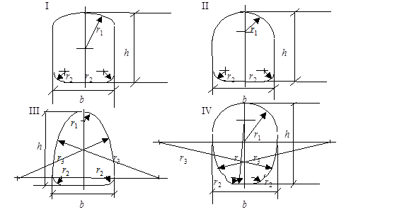
Черт. 1. Формы поперечных сечений безнапорных туннелей в свету
Поперечное сечение кругового очертания следует принимать для безнапорных туннелей, проходящих в грунтах, развивающих горное давление, несимметричное относительно вертикальной оси сечения, в набухающих грунтах, а также при высоком напоре подземных вод.
При надлежащем обосновании допускается принимать другие формы поперечного сечения безнапорных туннелей.
2.6. Поперечное сечение напорных туннелей следует принимать кругового очертания. В устойчивых слаботрещиноватых скальных грунтах допускается принимать некруговое очертание напорного туннеля (см. черт. 1, формы I, II, IV), если при этом удовлетворяются условия прочности обделки.
Примечание. Степень (модуль) трещиноватости скальных грунтов определяют в соответствии со СНиП II-16-76.
2.7. Размеры поперечного сечения туннелей следует определять на основании гидравлических и технико-экономических расчетов.
На начальных стадиях проектирования диаметр (или пролет) туннеля допускается принимать от 2 до 6 м - через 0,5 м, свыше 6 м - через 1 м длины.
В случае переменного гидравлического режима и при скоростях воды в туннеле свыше 10 м/с размеры поперечного сечения необходимо уточнять на основании лабораторных исследований с учетом опыта эксплуатации туннелей, находящихся в аналогичных условиях.
2.8. Высоту воздушного пространства над уровнем воды в безнапорном туннеле при установившемся движении потока со скоростью до 10 м/с следует принимать по гидравлическому расчету, но не менее 0,07 высоты туннеля в свету и не менее 40 см.
При скоростях течения воды в туннеле свыше 10 м/с достаточность указанного воздушного пространства должна быть обоснована данными лабораторных исследований.
2.9. Минимальные размеры поперечного сечения гидротехнических туннелей в свету необходимо принимать с учетом возможности размещения оборудования, коммуникаций, пропуска строительных механизмов и соблюдения требований "Правил безопасности при строительстве подземных гидротехнических сооружений", утвержденных Госгортехнадзором СССР и Минэнерго СССР.
2.10. Если гидротехнический туннель располагается в вечномерзлых грунтах, то при прочих равных условиях в проекте следует принимать туннель с напорным режимом работы.
3.1. Бетон и арматура для бетонных и железобетонных конструкций туннелей (обделка, порталы и др.) должны удовлетворять требованиям СНиП II-56-77, СНиП 2.03.01-84 и настоящего раздела.
3.2. Классы бетона по прочности на сжатие должны назначаться не ниже для конструкций:
монолитных бетонных и железобетонных..... В15
сборных железобетонных................................. В30
набрызг-бетонных............................................. В25
При надлежащем обосновании допускается применение бетона более низких классов со специальными добавками, улучшающими его свойства, а также бетонов на алунитовом и других самонапрягающих цементах.
Возраст (срок твердения) бетона, отвечающий его классу по прочности на сжатие и осевое растяжение и маркам по водонепроницаемости и морозостойкости, принимается равным 180 дням. Если известны сроки фактического загружения конструкций, способы их возведения, условия твердения бетона, вид и качество применяемого цемента, допускается устанавливать класс и марку бетона в ином возрасте.
3.3. При назначении класса и марки бетона обделок туннеля, располагаемого в вечномерзлых грунтах, необходимо учитывать возможность периодического (сезонного) замораживания и оттаивания бетона.
3.4. Классы набрызг-бетона и торкрета следует назначать по прочности на осевое растяжение не ниже Вt 2,4. Значения нормативных и расчетных сопротивлений набрызг-бетона и торкрета должны приниматься, как и для бетонов, в соответствии со СНиП 2.03.01-84.
Модули упругости набрызг-бетона и торкрета для классов Вt 2,4, Вt 2,8, Вt 3,2 необходимо принимать равными соответственно 3,25×104, 3,6×104 и 3,9×104 МПа (3,32×105, 3,67×105 и 3,98×105 кгс/см2).
3.5. Прочностные и деформационные характеристики монолитно-прессованного бетона следует назначать по данным экспериментальных исследований.
3.6. Для гидротехнических туннелей следует применять горячекатаную арматурную сталь периодического профиля классов А-II и А-III.
Расчетные сопротивления арматурной стали для железобетона и анкерной крепи должны соответствовать требованиям СНиП II-56-77.
3.7. Марки стали для стальных оболочек комбинированных обделок необходимо принимать согласно обязательному приложению 1.
Расчетные сопротивления прокатной стали и материалы, применяемые для сварки стальных конструкций, следует принимать согласно СНиП II-23-81.
3.8. Обделки (или покрытия) гидротехнических туннелей с повышенной кавитационной стойкостью и стойкостью к истиранию необходимо предусматривать из высокопрочных бетонов со специально подобранным составом. Допускается также применение специальных бетонов (латексного и других бетонов на основе полимерных вяжущих) и покрытий (полимеррастворов, полимермастик).
4.1. При проектировании гидротехнических туннелей должна быть предусмотрена возможность их опорожнения на всем протяжении для осмотра и ремонта.
Допускается не предусматривать опорожнения начальных участков туннелей до затворов. Длина этих участков должна быть минимальной.
4.2. Входы и выходы гидротехнических туннелей должны быть оформлены в виде порталов, которые следует размещать таким образом, чтобы естественное равновесие склонов рельефа было нарушено минимально.
В сейсмических районах порталы не должны выходить за пределы склона. При этом конструкции порталов надлежит принимать простых геометрических форм.
Размеры и конкретные геометрические формы проточной части портальных участков следует определять расчетами или принимать на основании лабораторных гидравлических исследований.
4.3. При входе в туннель должны быть предусмотрены устройства, исключающие попадание в туннель плавающих и других посторонних предметов.
На водоприемниках подводящих туннелей гидроэлектростанций обязательна установка сороудерживающих решеток.
4.4. На выходных портала следует предусматривать устройство безнапорных диффузоров, трамплинов или напорных диффузоров, расширяющихся в плане и уменьшающихся по высоте (для уменьшения размывающего действия водного потока), а также анкерных зубьев с цементацией грунта (для предотвращения подмыва выходных порталов).
Выходные порталы следует конструировать с учетом возможного размыва основания сооружения, русла реки и ее противоположного берега.
4.5. При проектировании гидротехнических туннелей должны быть предусмотрены воздухоподводящие устройства для предотвращения возможного образования вакуума в туннеле.
4.6. Следует предусматривать возможность удобного транспортирования в гидротехнические туннели материалов и оборудования, а также персонала, выполняющего ремонтные работы.
Для туннелей, подводящих воду к гидротурбинам или насосам, следует предусматривать возможность гидравлической промывки малыми попусками воды для очистки их от мелкого строительного мусора.
4.7. Безнапорные туннели, а также напорные туннели при глубине их заложения не менее половины величину внутреннего напора воды (в метрах), проходящие в слаботрещиноватых скальных неразмываемых грунтах (включая материал заполнения трещин) или в вечномерзлых скальных грунтах, не теряющих устойчивости при изменении температурного режима, следует проектировать без обделки.
4.8. При скорости течения воды свыше 10 м/с проектирование туннелей без обделки должно быть обосновано данными лабораторных исследований с учетом гидравлических условий работы туннеля и состояния скальных грунтов.
4.9. Для улучшения гидравлического режима и условий ревизий туннелей без обделки следует, как правило, проектировать туннели с плоским бетонным лотком.
4.10. Начальный и концевой участки необлицованного (напорного или безнапорного) туннеля должны предусматриваться с обделкой на длине, равной пролету (диаметру) выработки, но не менее 6 м.
4.11. Подводящие туннели (или их участки) без обделки, в которых может нарушиться устойчивость отдельных блоков или участков скального массива, должны в этих местах закрепляться анкерами на цементном растворе и набрызг-бетоном. В лотке туннеля должны предусматриваться специальные ловушки для отслоившегося грунта.
4.12. При проектировании туннелей без обделки должно предусматриваться контурное взрывание зарядов для уменьшения шероховатости поверхности туннеля.
4.13. Обделки гидротехнических туннелей подразделяются на:
выравнивающие (ненесущие), обеспечивающие улучшение гидравлических характеристик туннеля, а также предотвращения выветривания и размыва грунтов;
несущие, обеспечивающие восприятие нагрузок в строительный и эксплуатационный периоды, а также удовлетворяющие требованиям, предъявляемым к выравнивающим обделкам.
4.14. Выравнивающие обделки следует предусматривать из монолитного бетона или набрызг-бетона.
Допускается применять выравнивающие обделки свода и стен туннеля из набрызг-бетона без заглаживания их поверхности при скоростях воды в туннеле не более 10 м/с; при больших скоростях их применение должно быть обосновано данными лабораторных исследований.
Лоток при выравнивающих обделках следует предусматривать бетонным.
Выравнивающие обделки в напорных туннелях следует применять при глубине заложения туннелей не менее половины величины внутреннего напора воды (в метрах).
4.15. Основные виды несущих обделок напорных и безнапорных туннелей и область их применения должны соответствовать указанным в табл. 2.
Таблица 2
|
Коэффициенты крепости f и удельного отпора грунта Ко, Н/см3 (кгс/см3) |
|||||||||
|
f > 8; Ко > 5000 (500) |
f от 4 до 8; Ко = 2000 - 5000 (200 - 500) |
f < 4; Ко < 2000 (200) |
|||||||
|
Напор воды, м |
|||||||||
|
менее 30* |
от 30 до 100 |
св. 100 |
менее 30* |
от 30 до 100 |
св. 100 |
менее 30* |
от 30 до 100 |
св. 100 |
|
|
Монолитная: |
|||||||||
|
бетонная |
+ |
+ |
+ |
+ |
+ |
+ |
+ |
- |
- |
|
из прессованного бетона |
- |
- |
- |
+ |
- |
- |
+ |
- |
- |
|
из латексного и других низкомодульных бетонов |
- |
- |
- |
- |
+ |
- |
- |
- |
- |
|
набрызг-бетонная с анкерной крепью |
+ |
+ |
+ |
+ |
- |
- |
- |
- |
- |
|
железобетонная |
- |
- |
+ |
- |
+ |
+ |
+ |
+ |
+ |
|
Комбинированная: |
|||||||||
|
внутренняя железоторкретная оболочка, наружный монолитный бетон |
- |
- |
- |
- |
+ |
- |
- |
- |
- |
|
внутренняя стальная оболочка, наружный монолитный бетон или железобетон |
- |
- |
- |
- |
- |
+ |
- |
- |
+ |
|
внутренняя железобетонная оболочка, наружное сборное железобетонное кольцо |
- |
- |
- |
+ |
- |
- |
+ |
+ |
- |
|
* В том числе безнапорные туннели. Примечание. Применение обделок других видов, не приведенных в таблице, допускается при надлежащем обосновании. |
|||||||||
При щитовом способе проходки туннеля допускается применять обделки из монолитно-прессованного бетона.
Применение обделки из набрызг-бетона с анкерной крепью допускается для туннелей при глубине их заложения не менее половины величины внутреннего напора воды (в метрах). В сильнотрещиноватых грунтах набрызг-бетон необходимо выполнять по металлической сетке.
Сцепление набрызг-бетона с грунтом должно быть не менее 0,5 МПа (50 тс/м2). При соответствующем экспериментальном обосновании допускается применять обделки из набрызг-бетона при меньшем сцеплении и в грунтах с коэффициентом крепости f = 3. При наличии давления от грунтовых вод или при цементации грунта требуемая величина сцепления определяется расчетом, но должна быть не менее величины двойного напора воды, действующего на обделку.
В грунтах с коэффициентом крепости f от 4 до 8 для комбинированной обделки из внутренней железобетонной оболочки и наружного сборного железобетонного кольца взамен железобетонной оболочки допускается применять железоторкретную.
Бетонные и железобетонные обделки туннелей следует, как правило, предусматривать нетрещиностойкими.
Трещиностойкими должны быть обделки туннелей, сооружаемых в грунтах, подверженных суффозии, выщелачиванию, при гидрокарбонатной щелочности воды в туннеле менее 0,25 кг×экв/л, а также в случаях, когда фильтрация воды может вызвать снижение долговечности обделки и устойчивости грунтового массива.
4.17. Толщина бетонной или железобетонной несущей обделки должна быть не более 0,15 внутреннего радиуса ri поперечного сечения туннеля при круговом его очертании или 0,15 половины ширины сечения b при некруговом очертании.
Если по условиям трещиностойкости требуется увеличение толщины обделки напорных туннелей, следует рассмотреть возможность применения материала обделок с меньшими значениями модулей упругости, чем у тяжелых бетонов, или улучшения деформационных характеристик грунтов путем их укрепительной цементации, или применения предварительно напряженной железобетонной обделки туннеля на напрягающем цементе.
4.18. Минимальную толщину обделок гидротехнических туннелей следует принимать, см:
монолитных бетонных и железобетонных........... 20
внутренней монолитной железобетонной
оболочки комбинированных обделок................... 10
сборных железобетонных....................................... 10
из набрызг-бетона:
несущих..................................................................... 10
выравнивающих....................................................... 5
из железоторкрета.................................................... 5
4.19. Проценты армирования нетрещиностойких железобетонных обделок напорных туннелей следует определять из условия ограничения раскрытия трещин (согласно табл. 7) и фильтрационных потерь, но принимать не менее 0,5 %.
Для трещиностойких обделок напорных туннелей сооружаемых в грунтах с коэффициентом крепости f < 4 минимальное армирование необходимо принимать 0,3 %, в грунтах с f ³ 4 - 0,15 %.
Для обделок безнапорных туннелей минимальный процент армирования не ограничивается.
Минимальное армирование железоторкретных оболочек следует принимать не ниже 1 %.
4.20. В железобетонных обделках напорных туннелей при двухрядном расположении арматуры основную часть расчетной арматуры (60 - 79 %) следует располагать у внутренней поверхности обделки.
В прочных однородных грунтах, а также при использовании временной крепи из металлических арок допускается установка однорядной арматуры, располагаемой у внутренней поверхности обделки.
Продольную распределительную арматуру следует размещать с внутренней поверхности от рабочей с шагом не более 25 см.
В неоднородных грунтах, при карстовых пустотах, тектонических и других нарушениях грунтового массива надлежит предусматривать конструктивные мероприятия, исключающие образование трещин с раскрытием более допустимого.
В железобетонных обделках безнапорных туннелей размещение арматуры определяется расчетом по предельным состояниям первой группы.
4.21. Толщину защитного слоя для рабочей арматуры монолитных железобетонных обделок следует принимать не менее:
30 мм при толщине обделки до 30 см;
40 мм при толщине обделки св. 30 до 50 см;
50 мм при толщине обделки св. 50 см.
В агрессивной воде-среде толщина защитного слоя увеличивается на 10 мм.
Минимальную толщину защитного слоя для распределительной арматуры следует принимать на 10 мм меньше, чем для рабочей.
Для сборных элементов обделки толщину защитного слоя допускается уменьшать на 10 мм по сравнению с установленной для монолитных обделок.
Толщину защитного слоя лотка туннеля необходимо устанавливать с учетом его истирания наносами.
4.22. Для обеспечения водонепроницаемости строительных и деформационных швов обделок напорных туннелей необходимо предусматривать в швах установку диафрагм, шпонок или других уплотнений.
4.23. Деформационные швы следует располагать в местах примыкания к камерам и на участках туннеля, где элементы обделки могут смещаться.
4.24. Заполнительная цементация в туннелях с обделкой должна предусматриваться во всех случаях, за исключением туннелей с обделками из набрызг-бетона или прессованного бетона, а также наклонных и вертикальных водоводов с обделкой из литого бетона.
4.25. При проектировании обделок напорных туннелей, располагаемых в трещиноватых грунтах, для улучшения деформационных характеристик и снижения водопроницаемости грунтов следует предусматривать укрепительную и противофильтрационную цементацию при ее технической возможности и экономической эффективности.
4.26. Для улучшения условий работы конструкции обделки, воспринимающей давление подземных вод, следует рассматривать целесообразность применения дренажных устройств и анкеровки обделки в грунт.
4.27. При проектировании безнапорных туннелей, располагаемых в вечномерзлых грунтах, необходимо предусмотреть мероприятия, исключающие обледенение сводовой части, а также морозное пучение из-за сезонного оттаивания и замерзания грунтов выше уровня протекающей воды.
4.28. В вечномерзлых сильнольдистых грунтах следует применять податливые конструкции обделок (из железобетонных анкеров, набрызг-бетона), а также другие конструкции, способные перераспределять усилия в своих элементах без нарушения их целостности.
4.29. При проектировании туннелей, располагаемых в вечномерзлых грунтах, необходимо учитывать возможность осадки туннеля и поверхности над ним, связанной с образованием зоны оттаивания грунтов.
5.1. Нагрузки и воздействия разделяются на постоянные и временные - длительные, кратковременные и особые.
5.2. К постоянным нагрузкам и воздействиям относятся:
горное давление;
вес обделки;
воздействия предварительного напряжения.
5.3. К временным длительным нагрузкам относятся:
внутреннее давление воды в туннеле при нормальном подпорном уровне воды в водохранилище;
давление подземных вод.
5.4. К кратковременным нагрузкам и воздействиям относятся:
давление пульсации потока воды;
внутреннее давление воды, возникающее от гидравлического удара при нормальной эксплуатации туннеля;
температурные климатические воздействия (для стальных оболочек);
давление раствора на обделку при цементации;
давление от механизмов при производстве работ.
5.5. К особым нагрузкам и воздействиям относятся:
сейсмические и взрывные воздействия;
внутреннее давление воды в туннеле при форсированном подпорном уровне в водохранилище или от действия гидравлического удара при полном сбросе нагрузки;
усилия, возникающие вследствие изменения температуры, набухания и усадки бетона, ползучести грунтов;
давление раствора на стальную оболочку при цементации;
давление на стальную оболочку от свежеуложенного бетона;
давление гидравлического испытания (для стальных оболочек).
5.6. В статических расчетах туннельных обделок нагрузки и воздействия надлежит принимать в следующих сочетаниях:
основные, составляемые из постоянных, временных (длительных и кратковременных) нагрузок и воздействий;
особые, составляемые из постоянных, временных (длительных, некоторых кратковременных) и одной из особых нагрузок и воздействий.
5.7. Нагрузки и воздействия следует принимать в наиболее неблагоприятных, но возможных сочетаниях отдельно для строительного, эксплуатационного и ремонтного периодов.
5.8. Коэффициенты надежности по нагрузкам gf при расчете обделок туннелей на прочность и устойчивость (предельные состояния первой группы) следует принимать по табл. 3.
Таблица 3
|
Нагрузки и воздействия |
Коэффициент надежности по нагрузкам gf |
|
Вертикальное горное давление: |
|
|
от веса грунтов при сводообразовании |
1,5 |
|
от веса всей толщи грунтов над туннелем или от веса нарушенной зоны |
1,1 (0,9) |
|
Горизонтальное горное давление |
1,2 (0,8) |
|
Вес обделки |
1,2 (0,9) |
|
Внутреннее давление воды (с учетом гидравлического удара) |
1,0 |
|
Давление: |
|
|
пульсации потока воды |
1,2 |
|
подземных вод |
1,1 (0,9) |
|
раствора при цементации |
1,2 (1,0) |
|
от механизмов |
1,2 |
|
Примечание. Значения коэффициентов надежности по нагрузкам, указанные в скобках, относятся к случаям, когда применение меньшего значения коэффициентов приводит к невыгодному случаю загружения обделки туннеля. |
|
При расчетах по предельным состояниям второй группы коэффициент надежности по нагрузкам следует принимать равным 1.
5.9. Определение величины горного давления, а также естественного напряженного состояния грунтового массива необходимо выполнять согласно пп. 5.10-5.15, а также на основании опыта строительства и эксплуатации туннелей в аналогичных инженерно-геологических условиях.
Для безнапорных туннелей I класса и напорных туннелей I и II классов значения горного давления должны быть уточнены на стадии рабочей документации на основании натурных исследований на участках с характерными инженерно-геологическими условиями.
Горное давление допускается принимать равным весу грунта в объеме нарушенной зоны, определенной геофизическими измерениями.
5.11. Нормативное вертикальное горное давление gqzn, кН/м2, при сводообразовании в грунтах с коэффициентом крепости f < 4 определяется по формуле
gqzn = brghq, (1)
где b - коэффициент, принимаемый в зависимости от пролета выработки b равным: 0,7 при b £ 5,5 м; 1,0 при b ³ 7,5 м; по интерполяции между 0,7 и 1,0 при 5,5 < b < 7,5 м;
r - плотность грунта, т/м3;
g = 9,81 » 10 м/с2;
hq - высота свода обрушения, м; определяется по формуле
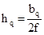
bq - пролет свода обрушения, м; определяется по формуле
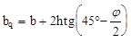
h - высота выработки, м;
j - кажущийся угол внутреннего трения (j = arc tgf).
Распределение вертикального горного давления принимается равномерным по пролету обделки.
5.12. Нормативное вертикальное горное давление gqzn, кН/м2, в грунтах с f ³ 4 следует принимать равным весу грунтов в объеме нарушенной зоны, установленной по данным натурных исследований, а при их отсутствии - по формуле
gqzn = brghq1, (2)
где hq1 = kab - глубина нарушенной зоны, м;
ka - коэффициент, принимаемый по табл. 4.
Таблица 4
|
Коэффициент ka при грунтах |
|||
|
слаботрещиноватых |
среднетрещиноватых |
сильнотрещиноватых |
|
|
4 |
0,2 |
0,25 |
0,3 |
|
От 5 до 8 |
0,1 |
0,2 |
0,25 |
|
10 и более |
0,05 |
0,1 |
0,15 |
Распределение вертикального горного давления по пролету обделки принимается с учетом напластования, систем трещин и других особенностей грунтового массива.
В слаботрещиноватых грунтах при глубине нарушенной зоны более 1,5 м нормативное вертикальное горное давление gqzn следует уменьшать на 20%.
При комбайновой проходке значение kа допускается уменьшать на 30%.
5.13. Нормативное горизонтальное горное давление gqxn, кН/м2, определяется:
при сводообразовании в грунтах f < 4 - по формуле
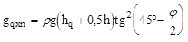
при заглублении кровли менее удвоенной высоты свода обрушения в грунтах с f < 4 - по формуле (3) с заменой численного значения hq на расстояние от кровли выработки до дневной поверхности.
Распределение горизонтального горного давления должно быть равномерным по высоте обделки.
5.14. Нормативное горизонтальное горное давление в слабо- и среднетрещиноватых грунтах с f ³ 4 при высоте туннеля менее 6 м допускается не учитывать, а при высоте более 6 м - определять из условия предельного равновесия отдельных скальных блоков, отсеченных трещинами.
Нормативное горизонтальное горное давление в сильнотрещиноватых грунтах с f ³ 4 допускается учитывать по формуле
gqxn = 0,1rgh. (4)
5.15. Для выработок глубокого заложения (свыше 500 м) величину горного давления следует определять с учетом пластического состояния грунтов и других специфических явлений.
При отсутствии необходимых данных допускается на начальных стадиях проектирования выработок глубокого заложения определять горное давление на основе опыта строительства туннелей в аналогичных инженерно-геологических и гидрогеологических условиях.
5.16. В выработках глубокого заложения, расположенных в глинистых и других слабых грунтах с f < 4, оказывающих значительное равномерное давление на конструкцию туннеля, нагрузку на обделку следует определять с учетом ожидаемых смещений грунта до устройства временной крепи и податливости этой крепи в соответствии с требованиями СНиП II-94-80, а также податливости самой обделки.
5.17. При расчете обделки горное давление необходимо определять по характеристикам грунтов с учетом условий эксплуатации (изменения свойств массива грунтов при их водонасыщении).
5.18. При расчете обделок напорных туннелей, располагаемых в водопроницаемых грунтах, включение в одно сочетание нагрузок от внутреннего давления воды и наружного давления подземных вод не допускается. В исключительных случаях, когда во всех возможных (включая аварийные) эксплуатационных ситуациях гарантировано всестороннее равномерное наружное давление воды непосредственно на обделку, допускается включать в одно сочетание с внутренним давлением минимальное значение наружного давления подземных вод с коэффициентом надежности по нагрузкам, равным 1.
5.19. Давление подземных вод следует определять при установившемся уровне воды в водохранилище с учетом снижения давления подземных вод, предусмотренными для этих целей дренажными устройствами и цементационными завесами.
5.20. При проектировании гидротехнических туннелей, располагаемых в вечномерзлых грунтах, необходимо учитывать влияние изменений температурного режима грунтов на их несущую способность, а также устойчивость и сопротивляемость грунтов внешним нагрузкам.
6.1. Обделки гидротехнических туннелей, согласно СТ СЭВ 1406-78, следует рассчитывать по методу предельных состояний:
по несущей способности на прочность и в необходимых случаях с проверкой устойчивости формы конструкции (предельные состояния первой группы) в соответствии с обязательным приложением 1;
по образованию трещин (трещиностойкости), если трещины не допускаются, или по раскрытию трещин, если раскрытие их допустимо по условиям долговечности обделки туннеля, сохранности грунтового массива, а также по значению фильтрационного расхода воды из туннеля (предельные состояния второй группы) в соответствии с обязательными приложениями 2 и 3.
6.2. Сечения обделок по предельным состояниям первой и второй групп необходимо рассчитывать в соответствии со СНиП II-56-77 и СНиП II-23-81.
6.3. При расчетах сечений туннельных обделок необходимо вводить следующие коэффициенты:
коэффициенты надежности по назначению сооружения gn и сочетаний нагрузок glc, принимаемые согласно СНиП II-50-74;
коэффициент условий работы gc, принимаемый для бетонных, железобетонных и сталежелезобетонных обделок по табл. 5, для стальных оболочек - по табл. 6.
Таблица 5
|
Коэффициент условий работы gc при расчете по предельным состояниям |
||
|
первой группы |
второй группы |
|
|
Бетонные (в том числе из набрызг-бетона и прессованного бетона) |
1,0 |
0,9 (0,75) |
|
Железобетонные (в том числе предварительно напряженные, из армированного набрызг-бетона и железоторкретные) |
1,1 |
1,3 (1,15) |
|
Сталежелезобетонные (при расчете на внутреннее давление) |
0,9 |
- |
|
Примечание. Значения коэффициентов, указанные в скобках, следует принимать при коэффициенте удельного отпора Ко < 2000 Н/см3), в грунтах, подверженных суффозии, выщелачиванию, а также при гидрокарбонатной щелочности воды-среды менее 0,25 мг×экв/л. |
||
Таблица 6
|
Участки стальных оболочек |
Коэффициент условий работы gc при сочетании нагрузок |
||
|
основных |
особых |
||
|
Внутреннее |
Прямые |
0,75 (0,9) |
1,0 (1,1) |
|
Фасонные элементы (колена и разветвления) |
0,65 (0,75) |
0,8 (0,9) |
|
|
Наружное |
Все участки |
0,75 |
0,9 |
|
Примечания: 1. Значения коэффициента gc, указанные в скобках, должны приниматься: а) для комбинированных обделок с наружным монолитным железобетоном (сталежелезобетонных); б) для комбинированных обделок с наружным монолитным бетоном при одновременном выполнении следующих условий: pwi £ 0,15×10-2Ko; pwi £ 10-3rghqz(m cos a + sin a), где pwi - внутреннее давление воды в напорном туннеле, МПа; hqz - кратчайшее расстояние от оси туннеля до поверхности земли, м; m = 0,7 - коэффициент трения грунта по грунту; a - угол между нормалью к поверхности земли и горизонтом, град; Ко - коэффициент удельного отпора грунта, Н/см3, определяемый по п. 6.13; в) при расчете на внутреннее давление, если отпор грунта не учитывается. 2. При использовании коэффициента gc по данной таблице коэффициент сочетаний нагрузок glc следует принимать равным 1. |
|||
6.5. Расчет обделок по образованию и раскрытию трещин должен осуществляться на основные сочетания нормативных нагрузок без учета гидравлического удара с применением нормативных характеристик материалов обделок.
6.6. Расчет обделок гидротехнических туннелей всех типов (включая фасонные части комбинированных обделок) следует выполнять с учетом отпора грунтов. Исключения допускаются при расположении туннелей в слабых неустойчивых грунтах. При расположении туннелей на глубине менее трех диаметров (пролетов) над шелыгой свода величина давления, передаваемого на грунт обделкой туннеля, не должна превышать веса толщи грунта над туннелем.
6.7. Расчет обделок произвольного очертания на любые внешние и внутренние нагрузки или их сочетания при изменяющихся по контуру деформационных характеристик грунтов следует выполнять методами строительной механики.
Расчет необходимо выполнять в соответствии с пп. 6.4 и 6.5 на каждое из сочетаний нагрузок. Сложение эпюр усилий от отдельных нагрузок для получения суммарной эпюры не допускается.
6.8. Бетонные обделки безнапорных туннелей следует рассчитывать на прочность в предположении образования в обделке пластических шарниров и проверять на трещиностойкость по предельным состояниям второй группы.
6.9. При расчете обделок по предельному состоянию второй группы предельную ширину раскрытия трещин обделок напорных и безнапорных туннелей I класса следует принимать по табл. 7.
Таблица 7
|
Градиент напоров воды в обделке JH |
Предельная ширина раскрытия трещин, мм, из условия |
|||||||
|
долговечности бетона при гидрокарбонатной щелочности воды-среды, мг×экв/л. |
сохранности арматуры при суммарной концентрации ионов Cl и SO4, мг/л |
|||||||
|
0,25 |
1 |
2 |
2,5 и более |
до 50 |
100 |
200 |
400-1000 |
|
|
Напорные туннели и незатопляемые части безнапорных туннелей при наличии подземных вод |
||||||||
|
5 |
0,1 |
0,18 |
0,35 |
0,5 |
0,5 |
0,4 |
0,35 |
0,3 |
|
50 |
0,07 |
0,15 |
0,32 |
0,45 |
0,5 |
0,4 |
0,35 |
0,3 |
|
300 |
0,05 |
0,12 |
0,23 |
0,4 |
0,4 |
0,3 |
0,25 |
0,2 |
|
Незатопляемые части обделок безнапорных туннелей при отсутствии подземных вод |
||||||||
|
- |
Не ограничивается |
0,2 |
0,2 |
0,15 |
0,1 |
|||
|
Примечания: 1. Водой-средой, определяющей долговечность бетона и арматуры в обделке, являются: при Hi > He1 - вода внутри тоннеля; при Hi < He1 - подземная вода. 2. Для туннелей II, III, IV классов предельные значения раскрытия трещин следует принимать соответственно в 1,3, 1,6 и 2 раза большими, чем значения, приведенные в таблице, но не более 0,5 мм. |
||||||||
6.10. Градиент напора JН в обделках принимают в зависимости от коэффициента фильтрации k грунта:
JH = 1 при k £ 10-4 см/с;
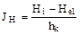
где Нi - внутренний напор воды, м;
He1 - напор подземных вод, м;
hk - толщина обделки, м.
В интервале 10-4 < k < 10-2 значение JH определяется по интерполяции.
6.11. Для затопляемых частей обделок безнапорных туннелей по условиям долговечности бетона и сохранности арматуры ширина раскрытия трещин не ограничивается.
обделки безнапорных туннелей и опорожненных напорных туннелей по предельным состояниям первой и второй групп рассчитывают с учетом жесткости бетонного сечения при модуле упругости бетона в конструкции Ek = 0,7Eb;
обделки напорных туннелей на эксплуатационные нагрузки по предельным состояниям первой группы рассчитывают с учетом жесткости арматурного сечения Ek = Ea.
По предельным состояниям второй группы обделки напорных туннелей следует рассчитывать:
нетрещиностойкие - с учетом жесткости арматурного сечения Ek = Ea;
трещиностойкие - с учетом жесткости бетонного сечения при Ek = 0,7Eb.
6.13. Расчет обделок туннелей следует выполнять с учетом взаимодействия их с грунтовым массивом. Деформационные свойства грунта характеризуются коэффициентом удельного отпора Ко или приведенным (эффективным) модулем деформации грунта Eq и коэффициентом Пуассона n. Приведенный модуль деформации необходимо определять с учетом неоднородности свойств грунта от естественных и техногенных причин (закрепление грунтов цементацией или иными способами, появление нарушенной проходкой зоны и др.). Значения характеристик грунтов следует определять с учетом их свойств при водонасыщении на основании натурных исследований.
Для напорных туннелей кругового очертания, располагаемых в однородных изотропных грунтах, модуль деформации грунта Eq допускается определять по формуле
Eq = Ko(1 + n) (5)
где
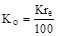
К - коэффициент отпора грунта;
re - наружный радиус обделки, см.
Для туннелей, располагаемых в анизотропных грунтах с отношением модулей деформации в разных направлениях более 1,4, расчеты необходимо выполнять с учетом анизотропии.
6.14. Деформационные характеристики грунтов Ko или Eq для туннелей I и II классов следует определять на характерных инженерно-геологических участках по данным натурных исследований, выполненных методом напорных выработок, с помощью установки центрального нагружения (УЦН) и цилиндрического гидравлического штампа (ЦГШ), а также штампов в сочетании с сейсмоакустическими и прессиометрическими методами.
Для туннелей III и IV классов надлежит предусматривать натурные исследования сейсмоакустическими и прессиометрическими методами. Допускается также использовать значения физико-механических характеристик грунтов, выявленных при проходке туннелей в аналогичных инженерно-геологических условиях.
6.15. Для проектирования гидротехнических туннелей, располагаемых в вечномерзлых грунтах, необходимо определять значения физико-механических характеристик грунтов в мерзлом и талом состоянии.
6.16. Для предварительных расчетов значения коэффициентов удельного отпора Ko для среднетрещиноватых грунтов допускается определять по черт. 2 или по аналогам.
Черт. 2. График зависимости коэффициента Ко от коэффициента крепости грунта f для трещиноватых грунтов
Примечание. В слаботрещиноватых грунтах с f £ 10, а также при комбайновой проходке туннеля значения Ко, полученные по черт. 2, следует увеличивать на 30%.
6.17. В расчетах обделок туннелей необходимо учитывать совместную работу устанавливаемой при проходке туннеля крепи с обделкой.
6.18. При назначении расчетной схемы обделки туннеля и грунтового массива следует учитывать последовательность разработки грунта и возведения элементов обделки.
6.19. При параллельном расположении нескольких туннелей в расчете обделки на прочность необходимо учитывать изменения напряженного состояния и прочностных свойств грунтового массива, вызванных проходкой соседних туннелей.
6.20. Расчет бетонных и железобетонных обделок туннелей на температурные воздействия следует выполнять при расчетной разности температур более 30°С с учетом набухания и ползучести бетона.
6.21. При расчете обделок напорных и безнапорных туннелей противодавление воды в швах бетонирования и в сечениях между швами бетонирования не учитывается.
6.22. Толщину лотка туннеля, подверженного воздействию влекомых насосов, следует назначать с учетом возможности истирания лотка.
Обязательное
В расчетной схеме, как правило, предполагается, что нагрузки, в том числе и горное давление, заданы, а отпор грунта определяется как реакция упругого основания. Возможные простейшие расчетные схемы обделок как стержневых систем в упругой среде с односторонними связями показаны на черт. 1.
Черт. 1. Расчетные схемы обделок туннелей
Расчет прочности следует выполнять на расчетные нагрузки (с учетом коэффициентов надежности по нагрузкам) в соответствии с разд. 5, жесткость принимать в соответствии с п. 6.12, коэффициенты отпора грунта - в соответствии с пп. 6.13-6.16.
Расчет сечений обделок и определение необходимой площади сечения арматуры Аs следует производить по СНиП II-56-77.
На начальных стадиях проектирования расчет напорных туннелей выполняется по приближенным формулам, которые учитывают только внутреннее давление, постоянное в пределах сечения.
Площадь сечения рабочей арматуры Аs, см2, на 1 см длины туннеля:
при соблюдении условия
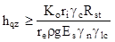
определяется по формуле
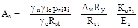
при несоблюдении условия (1) - по формуле
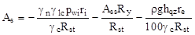
где pwi - расчетное внутреннее давление воды с учетом гидравлического удара в период нормальной эксплуатации, МПа;
hqz - расстояние от шелыги свода туннеля до поверхности земли, см;
Rst, Es - расчетное сопротивление арматуры на растяжение и модуль упругости арматуры, МПа;
Аss - площадь сечения стальной оболочки, см2, на 1 см длины туннеля;
Ry - расчетное сопротивление стальной оболочки, принимаемое по СНиП II-23-81, МПа;
Ко - коэффициент удельного отпора грунта, Н/см3;
r - плотность грунта, кг/см3;
gс, gn, glc - коэффициенты, принимаемые согласно п. 6.3.
Если по формулам (2) или (3) As < 0 (т. е. расчетной арматуры не требуется и внутреннее давление воды полностью воспринимается грунтом), следует принимать значение As по минимальному проценту армирования согласно п. 4.19.
3.1. Марки стали для стальных оболочек и колец жесткости следует принимать по табл. 1.
Таблица 1
|
ГОСТ или ТУ |
Толщина листового проката, мм |
Категория стали при расчетной температуре t, °С |
|||
|
t ³ -40 |
-40 > t ³ -50 |
-50 > t ³ -65 |
|||
|
ВСт3Гпс |
10 - 30 |
5 |
- |
- |
|
|
18Гпс |
10 - 30 |
+ |
- |
- |
|
|
09Г2 гр. 1 |
ТУ 14-1-8023-80 |
11 - 20 |
12 |
- |
- |
|
09Г2 |
10 - 32 |
12 |
- |
- |
|
|
09Г2С гр. 1 |
10 - 20 |
12 |
13 |
15 |
|
|
09Г2С |
10 - 60 |
12 |
13 |
15 |
|
|
10ХСНД |
10 - 40 |
12 |
13 |
15 |
|
|
Примечания: 1. Знак “+” означает, что категорию стали и требования к ней указывать в проекте не следует; знак “-“ означает, что данную марку стали при указанной расчетной температуре применять не следует. 2. При надлежащем технико-экономическом обосновании допускается применять сталь других марок. |
|||||
3.2. Стальные оболочки следует рассчитывать на действие внутреннего давления воды в туннеле, наружного давления подземных вод, раствора (при цементации) и свежеуложенного бетона с учетом температурных воздействий, а также на действие собственного веса и нагрузок от механизмов при монтаже оболочки. При расчете стальных оболочек действие горного давления не учитывается.
Коэффициент надежности по нагрузке gf коэффициент надежности по назначению сооружения gn и коэффициент условий работы gc следует принимать согласно требованиям пп. 5.8 и 6.3.
Примечание. Значение коэффициента условий работы gc приведены для расчета стальных оболочек без учета местных напряжений.
3.3. Расчет на прочность стальных оболочек следует выполнять по формуле
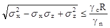
при этом необходимо соблюдать условия:
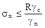 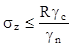
где sx, sz - нормальные напряжения соответственно в поперечном и продольном сечениях оболочки, МПа;
R - расчетное сопротивление, МПа, принимаемое при расчетах на
внутреннее давление с учетом отпора грунта равным 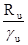
Ru, Ry - расчетные сопротивления стали растяжению, сжатию, изгибу, МПа, соответственно по временному сопротивлению и по пределу текучести, принимаемые по СНиП II-23-81;
gu - коэффициент надежности для элементов конструкций, рассчитываемых на прочность по временному сопротивлению, равный 1,3.
3.4. Нормальное напряжение sz, МПа, в продольных сечениях оболочки от внутреннего давления воды следует определять по формулам:
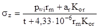
где pwi - расчетное внутреннее давление воды, МПа;
rm - средний радиус оболочки, см;
t - толщина стенки оболочки, см;
ar - расчетный радиальный зазор между оболочкой и бетоном, см;
Kor - приведенный коэффициент удельного отпора грунта, Н/см3, определяемый по формуле
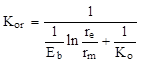
rе - наружный радиус бетонной обоймы, см;
Eb - модуль упругости бетона, МПа;
б) при отсутствии отпора грунта или при
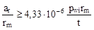
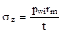
3.5. Расчетный радиальный зазор между оболочкой и бетоном аr, см, следует определять по формуле
ar = ar1 + ar2 + ar3, (8)
где ar1, ar2, ar3 - составляющие радиального зазора соответственно от температурных воздействий, усадки бетона и ползучести грунта, см.
Составляющую зазора от температурных воздействий ar1 следует определять по формуле
ar1 = 15,6×10-6rm(tmax - tmin), (9)
где tmax - наибольшая температура в туннеле при заполнительной цементации, °С;
tmin - минимальная температура воды или воздуха в туннеле, °С.
Составляющие зазора от усадки бетона ar2 и ползучести грунта ar3, определяемые по данным исследований, следует учитывать только при расчете на особые сочетания нагрузок.
Для предварительных расчетов допускается принимать
ar = 3×10-4rm. (10)
3.6. Нормальное напряжение sz МПа, в продольных сечениях оболочки от наружного давления следует определять по формуле
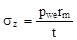
где рwe - расчетное наружное давление МПа.
3.7. Нормальное напряжение, МПа, в поперечном сечении оболочки следует определять:
от температурных воздействий - по формуле
sx1 = -2,52td, (12)
где td - расчетный перепад температур, °С;
от стеснения поперечной деформации - по формуле
sx2 = 0,3sx, (13)
3.8. Расчетные перепад температур td следует определять по формулам:
при повышении температуры
td = tmax - tb,min, (14)
при понижении температуры
td = tmin - tb,max, (15)
где tmax, tmin - соответственно наибольшая и наименьшая температура воды или воздуха в туннеле, °С;
tb, max, tb,min - соответственно наибольшая и наименьшая температура оболочки в период обетонирования, °С.
3.9. Местные напряжения, возникающие в стальной оболочке у ребер жесткости, а также в местах перелома, образующих под углом не более 10°, допускается не учитывать.
3.10. Расчет на устойчивость стальной оболочки при действии наружного давления рwe, МПа, следует выполнять по формуле
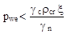
где rcr - критическое наружное давление, МПа;
x - коэффициент, принимаемый по табл. 2.
Таблица 2
|
rcr rm/tRуп |
0,5 |
0,75 |
1 |
1,5 |
2 |
2,5 |
|
x |
1 |
0,9 |
0,8 |
0,6 |
0,5 |
0,4 |
При 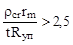
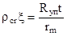
где Rуп - нормативный предел текучести стали, МПа.
3.11. Критическое наружное давление при
отсутствии колец жесткости и при 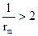
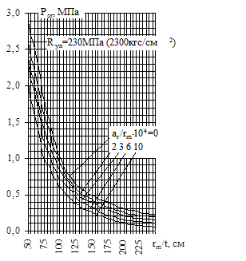
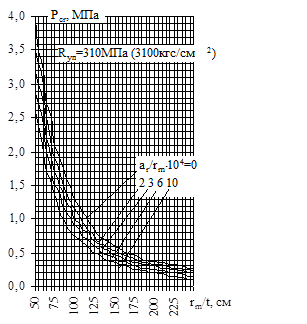
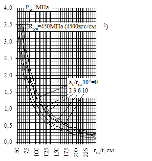
Черт. 2.
График зависимости критического наружного давления rcr от
относительной толщины стенки rm/t
[Rуп - нормативное
сопротивление по пределу текучести стали, МПа (кгс/см2); ar
- расчетный радиальный зазор между стенкой оболочки и бетоном, см; rm
- средний радиус оболочки, см; t - толщина стенки оболочки, см]
3.12. Критическое наружное давление rcr, МПа, при наличии колец жесткости следует определять по формулам:
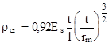 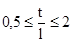
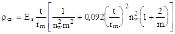 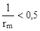
где Es - модуль упругости стали, МПа,
nw - число волн, образующихся при смятии оболочки, подбираемое таким образом, чтобы получить минимальное значение rcr,
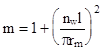
3.13. Кольца жесткости надлежит проектировать минимального поперечного сечения с целью уменьшения габаритов выломки.
Рекомендуется предусматривать анкеровку колец жесткости в бетоне. В случае невозможности анкеровки расчет кольца жесткости прямоугольного поперечного сечения следует производить по формуле
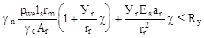
где tr - толщина кольца жесткости, см;
Уr - расстояние от центра тяжести сечения кольца до наиболее удаленного волокна, см;
c - коэффициент, определяемый по черт. 3 в зависимости от значения величин:
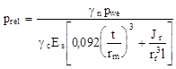
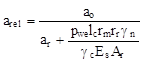
rr, Ar, Jr -
соответственно радиус центральной оси, см, площадь, см2, и момент
инерции поперечного сечения кольца с присоединенным пояском длиной ls
= 1,56 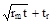
аo = 0,0025rm - начальное отступление радиуса кольца от теоретического.
Черт. 3. График зависимости коэффициента c от prel при arel = const
Обязательное
Расчет следует выполнять на основное сочетание нормативных нагрузок в соответствии с разд. 5 и 6 с учетом коэффициента отпора грунта, жесткость сечения принимается согласно п. 6.12.
По полученным усилиям (изгибающий момент и нормальная сила) необходимо выполнить расчет по образованию и раскрытию трещин.
Трещиностойкие обделки, проектируемые для условий, отвечающих п. 4.16, следует проверять по образованию трещин согласно СНиП II-56-77.
Нетрещиностойкие обделки должны рассчитываться по раскрытию трещин согласно разд. 4 и 5 настоящего приложения.
На начальной стадии проектирования расчет по образованию трещин трещиностойких обделок, проектируемых для условий, отвечающих п. 4.16, допускается выполнять по формулам (1) и (2), обеспечивающим трещиностойкость при действии внутреннего давления.
Толщину обделки hk, см, следует вычислять по формулам:
при коэффициенте удельного отпора грунта Ко £ 2000 Н/см3
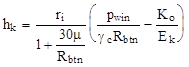
где pwin - нормативное внутреннее давление воды, МПа;
Еk - модуль упругости материала обделки, принимаемый равным 0,7 Eb, МПа;
Rbth - нормативное сопротивление материала обделки на растяжение, принимаемое по СНиП 2.03.01-84 в соответствии с классом бетона, МПа;
m - коэффициент армирования сечения;
в слаботрещиноватых грунтах при Ко ³ 2000 Н/см3
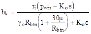
где e = 0,25×10-4 gсRbtn lg (0,05Ko + 10).
Толщину несущих обделок из набрызг-бетона hk, м, следует определять по формуле
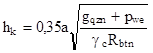
где gqzn - нормативная величина вертикального горного давления (п. 5.12), МПа. При специальном обосновании допускается определять горное давление из условия объема возможного вывала между анкерами;
pwe - остаточное гидростатическое давление воды с учетом снижения уровня подземных вод дренажными или другими мероприятиями, МПа;
Rbtn - нормативное сопротивление набрызг-бетона на осевое растяжение при проектном классе бетона, определяемом по прочности на растяжение (по СНиП 2.03.01-84), МПа;
gс - коэффициент условий работы, принимаемый равным для армированной обделки - 1, для неармированной - 0,6;
а - шаг анкеров в продольном и поперечном направлениях, принимаемый наименьшим (но не менее 1 м) исходя из условий:
а) образования грунтового свода - по формуле
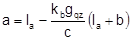
где la = hq1 + lq1 - длина анкеров, м;
hq1 - глубина нарушенной зоны, м (п. 5.12);
lq1 - глубина заделки анкеров за пределы нарушенной зоны, принимаемая равной 0,5 - 0,7 м;
b - пролет выработки, м;
с - сцепление грунта, принимаемое по данным натурных исследований; для предварительных расчетов допускается принимать с = 0,03f, МПа;
kb - коэффициент, равный 0,2 - 0,25 для выработок I формы сечения и 0,25 - 0,3 - для остальных форм сечения (см. черт. 1);
б) устойчивости грунтов между анкерами - по формуле
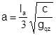
в) прочности закрепления анкера - по формуле
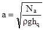
где Na - несущая способность анкера, равная для железобетонных анкеров прочности стержня анкера на разрыв, для остальных анкеров - 80-100 кН.
Ширина раскрытия трещин acrc, мм, в бетонных обделках туннеля, предусматриваемых в однородных трещиноватых грунтах или других грунтах, укрепленных цементацией, должна определяться по формуле
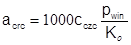
где 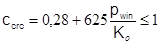
Ширину раскрытия трещин acrc, мм, в железобетонных обделках напорных и безнапорных туннелей следует рассчитывать по формуле
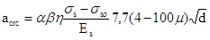
где a - коэффициент, учитывающий влияние трещиноватости скального грунта, сложенного из блоков, и принимаемый в зависимости от модуля трещиноватости Mq : а = 1 при Mq ³ 5; а = 2 при Mq £ 1. В интервале 1 £ Mq £ 5 значения а принимаются по интерполяции;
b - коэффициент, принимаемый для центрально- и внецентренно растянутых элементов - 1,2, для внецентренно сжатых и изгибаемых элементов - 1;
h - коэффициент, принимаемый равным при стержневой арматуре периодического профиля - 1, при гладкой арматуре - 1,4;
ss - напряжение в растянутой арматуре без учета сопротивления бетона растянутой зоны сечения, МПа;
ssо - начальное растягивающее напряжение в арматуре от набухания бетона: для конструкций, находящихся в воде, ssо = 20 МПа; для конструкций, подверженных длительному высыханию, в том числе во время строительства, ssо = 0;
m - коэффициент армирования сечения, принимаемый
равным 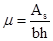
d - диаметр стержней арматуры, мм.
Напряжения в растянутой арматуре ss, МПа, следует определять по формулам:
для изгибаемых элементов
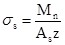
для центрально растянутых элементов
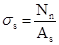
для внецентренно растянутых и внецентренно сжатых элементов при больших эксцентриситетах
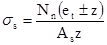
для внецентренно растянутых элементов при малых эксцентриситетах:
для более растянутой арматуры
; (12)
для менее растянутой арматуры
, (13)
где Mn, Nn - нормативные изгибающий момент и продольное усилие, определяемые в соответствии с обязательным приложением 1 (по стандартным программам);
z - плечо внутренней пары сил, принимаемое по результатам расчета сечения на прочность;
ho - рабочая высота сечения;
еt - расстояние от центра тяжести площади сечения растянутой арматуры до продольной силы Nn;
ес - расстояние от центра тяжести площади сечения сжатой арматуры до продольной силы Nn.
Определяемая расчетом ширина раскрытия трещин должна быть не более величин, приведенных в табл. 7.
Примечание. В формуле (11) знак "+" принимается при внецентренном растяжении, знак "-" - при внецентренном сжатии.
Обязательное
1. Допустимость величины фильтрационного расхода воды Q, л/с×см, отнесенного к 10 м разности внутреннего и внешнего напоров воды, надлежит определять по формуле
, (1)
где kcrc - коэффициент водопроницаемости трещин в обделке (расход воды, см3/с через 1 см трещины, при градиенте напора, равном 1), определяемый по формуле
; (2)
ncrc - количество трещин в обделке: бетонной - ncrc = 0,0628rе; железобетонной - ;
m - коэффициент армирования сечения обделки;
d - диаметр арматуры, см;
rе - наружный радиус обделки, см;
k - коэффициент фильтрации грунта, см/с;
Mf - модуль формы, характеризующий геометрическое соотношение между элементами зоны фильтрации и определяемый по формуле
; (3)
rf - радиус области фильтрации, принимаемые по опытным данным, а при их отсутствии - равным двойной глубине заложения туннеля, см;
Qadm - допускаемая величина фильтрационного расхода воды, отнесенная к единице разности внутреннего и наружного давлений и определяемая на основании технико-экономических расчетов. Для предварительных расчетов допускается принимать: Qadm = 1 л/с на 1000 м2 поверхности туннеля на каждые 10 м разности напоров - при разности внутреннего и наружного напоров 100 м и менее; Qadm от 0,3 до 0,5 л/с на 1000 м2 поверхности туннеля на каждые 10 м разности напоров - при разности внутреннего и наружного напоров свыше 100 м.
2. Абсолютную величину фильтрационного расхода воды из туннеля Qabs, л/с, следует определять по формуле
, (4)
где l - длина туннеля, см.
3. Для снижения фильтрационного расхода воды из туннеля следует предусматривать применение специальных покрытий на основе полимерных вяжущих материалов, укрепительную цементацию и другие конструктивные мероприятия.
Справочное
Основные характеристики грунтов
f - коэффициент крепости;
К - коэффициент отпора;
Ko - коэффициент удельного отпора;
Eq - модуль деформации;
n - коэффициент Пуассона;
j - кажущийся угол внутреннего трения;
c - сцепление грунта;
r - плотность грунта;
Mq - модуль трещиноватости;
gqzn - нормативное вертикальное горное давление;
gqxn - нормативное горизонтальное горное давление;
hq - высота свода обрушения;
bq - пролет свода обрушения;
hq1 - глубина нарушенной зоны;
hqz - высота толщи грунта над туннелем.
Нагрузки и воздействия, усилия от них
Mn, Nn - нормативный изгибающий момент и нормальная сила;
Hi - внутренний напор воды;
He - напор подземных вод;
He1 - гарантированный напор подземных вод;
pwi - расчетное внутреннее давление воды;
pwin - нормативное внутреннее давление воды.
Характеристика материалов
Ek - модуль упругости обделки;
Eb - модуль упругости бетона;
Es - модуль упругости арматуры;
Rst - расчетное сопротивление арматуры растяжению;
Ryn - нормативное сопротивление по пределу текучести стали;
Ru, Ry - расчетное сопротивление стальной оболочки растяжению, сжатию и изгибу соответственно по временному сопротивлению и пределу текучести;
Rbtn - нормативное сопротивление бетона растяжению;
Rbt - расчетное сопротивление набрызг-бетона осевому растяжению;
Ras - расчетное сопротивление растяжению стержня анкера.
Геометрические характеристики
h - высота выработки;
b - пролет выработки;
hk - толщина обделки;
tb - толщина покрытия набрызг-бетона;
ri - внутренний радиус обделки;
re - наружный радиус обделки;
rm - средний радиус оболочки;
t - толщина стальной оболочки;
As - площадь сечения арматуры;
ho - рабочая высота сечения;
ac - расстояние от равнодействующей усилий в сжатой арматуре до ближайшей грани сечения;
et, oc - расстояние от центра тяжести площади сечения соответственно растянутой и сжатой арматуры до продольной силы;
m - коэффициент армирования сечения;
d - диаметр анкера
Ass - площадь сечения стальной оболочки.
Коэффициенты
gf - коэффициент надежности по нагрузкам;
gn - коэффициент надежности по назначению сооружения;
glc - коэффициент сочетаний нагрузок;
gc - коэффициент условий работы.
Справочное
К основному тексту:
gqzn = bghq (1)
(здесь g - объемный вес грунта, тс/м3);
gqzn = bghq1; (2)
gqxn = g(hq + 0,5h) tg2(45° - ); (3)
gqxn = 0,1gh; (4)
Eq = 100Ko(1 + n). (5)
К обязательному приложению 1:
; (1)
; (2)
; (3)
; (5)
; (6)
sx1 = -25,2td; (12)
К обязательному приложению 2:
; (1)
, (2)
где e = 0,25×10-5gсRbtn lg (0,5Ko + 10);
, (7)
где .
СОДЕРЖАНИЕ